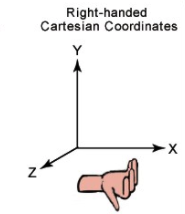

被webGL吓得赶紧投入到three.js的怀抱，发现一个最简单的会旋转的正方型，只需10+就搞定了！
好的，那我们还是先学习three.js吧~~ 我的目的是先学会怎么制造3d的内容，至于渲染优化什么的目前我还不需要，所以先放弃读webGL的api。
先看three.js的基础知识。
三大组件
在Three.js中，要渲染物体到网页中，我们需要3个组建：场景（scene）、相机（camera）和渲染器（renderer）。有了这三样东西，才能将物体渲染到网页中去。
场景（scene）
用THREE.Scene来表示。场景是所有物体的容器。每一个three.js 构造的3d内容，都需要在一个scene中。
1
| const scene = new THREE.Scene();
|
相机（camera）
用THREE.PerspectiveCamera(param) 生成。相机决定了场景中哪个角度的景色会显示出来。相机就像人的眼睛一样，人站在不同位置，抬头或者低头都能够看到不同的景色。场景只有一种，但是相机却又很多种。要根据不同的场景选择不同的相机。 之后会介绍不同的相机。
1
| var camera = new THREE.PerspectiveCamera(75, window.innerWidth/window.innerHeight, 0.1, 1000);
|
渲染器（renderer）
用THREE.WebGLRenderer()生成。渲染器决定了渲染的结果应该画在页面的什么元素上面，并且以怎样的方式来绘制。renderer有一些自己的方法和属性，如setSize(), domElement，可以用于场景的展示。
渲染应该使用渲染器，结合相机和场景来得到结果画面。实现这个功能的函数是:
render( scene, camera, renderTarget, forceClear )
各个参数的意义是：
scene：前面定义的场景
camera：前面定义的相机
renderTarget：渲染的目标，默认是渲染到前面定义的render变量中
forceClear：每次绘制之前都将画布的内容给清除，即使自动清除标志autoClear为false，也会清除。
1 2 3
| var renderer = new THREE.WebGLRenderer(); renderer.setSize(window.innerWidth, window.innerHeight); document.body.appendChild(renderer.domElement);
|
light光源 & object物体
场景什么的都准备好了，上主角吧 ~~
一个标准three.js 模板
这里我们把物体添加到场景中去。
比如我们想添加一个矩形进去，
1 2 3 4 5 6 7 8
| var geometry = new THREE.CubeGeometry(1,1,1); //CubeGeometry(width, height, depth, segmentsWidth, segmentsHeight, segmentsDepth, materials, sides) // 材质 var material = new THREE.MeshBasicMaterial({color: 0x00ff00}); var cube = new THREE.Mesh(geometry, material); scene.add(cube);
|
场景，相机，渲染器之间的关系
场景是物体的容器，照相机就是选择场景的一部分，渲染器负责把照相机照下来的场景内容展示到屏幕上。
计算机的3D世界
计算机的3D世界，是由点组成的，两个点组成线，不在一条线上的点组成面，无书面就能构成各种形状的物体，成为网状的模型，叫做mesh模型，在给这个模型贴上皮肤（纹理），那么物体就和现实差不多了。。。
three.js 的实现过程
创建一个场景
var scene = new THREE.Scene();
添加一个渲染器
1 2 3 4 5 6
| var render = new THREE.WebGLRenderer({ canvas: document.getElementById('myCanvas'), antialias: true }); render.setClearColor(0xffffff); render.setSize(canvas.style.width, canvas.style.height);
|
创建一个照相机
1 2 3 4
| var camera = new THREE.PerspectiveCamera(45, window.innerWidth / window.innerHeight, 0.1, 1000); camera.lookAt(new THREE.Vector3(20, 0, 20));
|
创建光
1 2 3 4
| var light = new THREE.AmbientLight(0xffffff); scene.add(light);
|
创建一个物体
1 2 3 4 5 6 7 8 9 10 11 12 13
| var geometry = new THREE.CubeGeometry(4, 4, 4); var material = new THREE.MeshBasicMaterial({ color: 0x4d6dad }); var mesh = new THREE.Mesh(geometry, material); mesh.position.set(10, 0, 10); scene.add(mesh);
|
创建一个物体
1 2 3
| render.render(scene, camera);
|
右手坐标系
threejs使用右手坐标系，x轴正方向向右，y轴正方向向上，z轴由屏幕从里向外。如下：

坐标系的点
联系原来学的几何，空间几何中，点可以用一个向量表示。那么在three.js中，可以用如下代码表示一个点： 假设一个点：(3,4,5)
1 2 3 4
| const point = new THREE.Vector(3,4,5); const pointer = new THREE.Vector(); pointer.set(3,4,5);
|
两点生成线
以两个点生成一条渐变的彩色线为例: 完整实例参考line-three.html
1 2 3 4 5 6 7 8 9 10 11 12 13 14 15 16 17
| function initObject() { var geometry = new THREE.Geometry(); var material = new THREE.LineBasicMaterial( { vertexColors: true } ); var color1 = new THREE.Color( 0x444444 ), color2 = new THREE.Color( 0xFF0000 ); var p1 = new THREE.Vector3( -100, 0, 100 ); var p2 = new THREE.Vector3( 100, 0, -100 ); geometry.vertices.push(p1); geometry.vertices.push(p2); geometry.colors.push( color1, color2 ); var line = new THREE.Line( geometry, material, THREE.LineSegments ); scene.add(line); }
|
线的更多理解
threejs中，线是由点，材质，颜色组成的。
THREE.Vector是点，但是threejs中没有提供单独画点的函数，所以要用THREE.Geometry来画，该结构有vertices属性，用来存放顶点。
材质的话，可以选择专为线准备的材质，THREE.LineBasicMaterial。
最后通过THREE.Line绘制了一条线。
new THREE.Line( geometry, material, THREE.LineSegments )
如果想绘制一个网格线。那么思路就是，先定义一个长度为1000的x方向上的线，然后。将线均分为20份，每一条分别加一个y方向的位移。另一方面，垂直的线我们需要沿z方向旋转x轴上的线，然后在x方向上平移。 完整实例参考 grid-three.html
1 2 3 4 5 6 7 8 9 10 11 12 13 14 15 16 17 18 19 20 21
| function initObject(scene) { var geometry = new THREE.Geometry(); var p1 = new THREE.Vector3( -500, 0, 0); var p2 = new THREE.Vector3( 500, 0, 0); geometry.vertices.push(p1); geometry.vertices.push(p2); var material = new THREE.LineBasicMaterial({ color: 0x800080, opacity: 0.6}); for ( let i = 0; i <= 20; i ++ ) { var line = new THREE.Line( geometry, material ); line.position.y = ( i * 50 ) - 500; scene.add( line ); var line = new THREE.Line( geometry, material); line.position.x = ( i * 50 ) - 500; // 将x轴方向的线，沿着z轴旋转90度，就变成了垂直的线~~ line.rotation.z = 90 * Math.PI / 180; scene.add( line ); } }
|
所有代码示例，可以参考这里code;
英文参考：webgl with three.js
实战参考： dragon/three.js
实例参考：参考